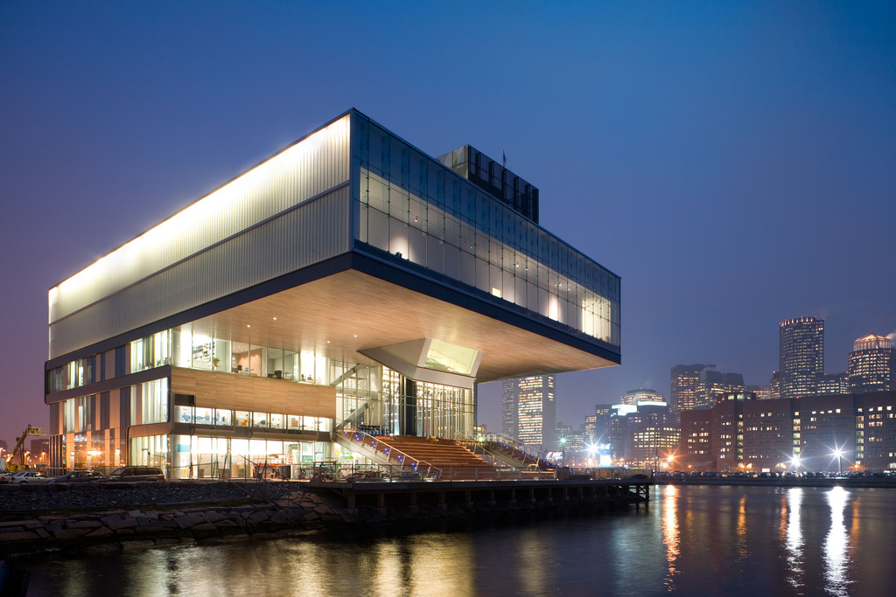
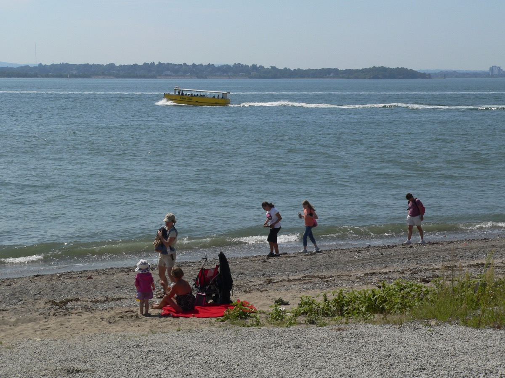
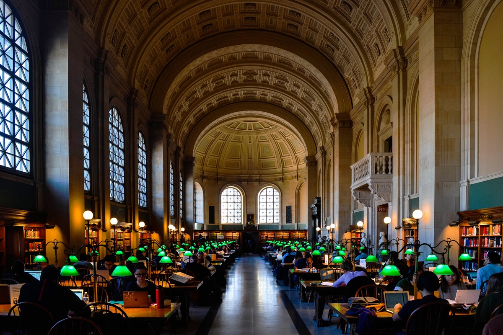

Boston is an unusually good city for a date, for a reason that has nothing to do with restaurants: it is small, and it is built around water. A first-date coffee on Charles Street can turn into a walk through the Public Garden, across the footbridge to the Esplanade and along the river, and you never have to decide whether to get in a car. A dinner in the North End is a ten-minute stroll from the best skyline view in the city. A ferry to an island with a beach leaves from a wharf in the Financial District.
This guide has 34 date ideas in Boston, sorted by what kind of date you're planning: low-pressure first dates, dinner-and-a-view nights, active dates on the water and the bike paths, indoor plans for when it rains, dates that cost nothing or close to it, and the restaurants and rooftops for the anniversary or the birthday. There's a table at the end that organizes it all by neighborhood, so you can plan around where one of you lives.
Every venue is real, with an address and the nearest T stop. Hours and prices change, so where we give them, check before you go.
The short answer
The 10 best date ideas in Boston
- Coffee on Charles Street and a walk through the Public Garden
- ICA Boston on a free Thursday night
- North End dinner, then the Harborwalk to Fan Pier
- Kayak the Charles from Kendall Square
- Ferry to Spectacle Island
- The Gardner Museum courtyard
- Jazz at Wally's Cafe
- Sunset on the Esplanade dock
- Oysters at Row 34
- Mamma Maria on North Square
01
First date ideas in Boston (low pressure)
A good first date has an easy exit at the one-hour mark and an easy extension if it's going well. These all do. None of them involve sitting across a white tablecloth from a stranger.
Coffee on Charles Street, then the Public Garden and the Esplanade
Get a coffee on Charles Street, walk south to the Public Garden, do a loop of the lagoon and the Ducklings, and if it's going well, cross the Fiedler Footbridge to the Esplanade and walk along the river. That's an hour if you want it to be and three if you don't. Charles Street's antique shops give you things to point at, and the Public Garden is the prettiest small park in the country. Tatte is the reliable coffee; Beacon Hill Books & Café at 71 Charles Street is quieter and has a bookshop upstairs. Our best cafés in Boston has more.
ICA Boston on a free Thursday night

The Institute of Contemporary Art is a glass box over the harbor, and Thursday nights are free, social and full of people on dates doing exactly what you're doing. The art gives you something to react to, the fourth-floor gallery has a floor-to-ceiling harbor view, and in summer the deck is open. When you're done, the Seaport's bars and restaurants are a five-minute walk, and so is Fan Pier for the skyline.
Browse Harvard Square bookstores, then a drink
Bookstores are the best low-pressure date venue there is: you can talk or not talk, and you learn a lot about someone from what they pick up. Harvard Book Store is open late, the Grolier Poetry Book Shop on Plympton Street is the smallest and oddest, and the Coop is the big one. Afterward, Charlie's Kitchen on Eliot Street for a beer, or a walk down JFK Street to the river and the Weeks Footbridge. Guide: Harvard Square.
Boston Public Market and the Greenway
The Boston Public Market is an indoor market of about 30 local vendors: cider donuts, oysters, cheese, coffee. Pick up lunch and eat it outside on the Rose Kennedy Greenway, the park that replaced the elevated highway, then walk to the North End or the harbor. On Friday and Saturday, Haymarket next door is a shouting open-air produce market and a good five minutes of entertainment.
Trivia night
Trivia is a first date with a built-in structure: two hours, a shared task, a reason to talk about things other than yourselves. Dozens of Boston bars run it on weeknights. We keep a schedule in the best trivia nights in Boston.
02
Dinner-and-a-view dates
Boston's skyline is compact enough to take in at once, and most of the good views are on the water. These pair a dinner with a walk to a view, which is the best date structure the city has.
North End dinner, then the Harborwalk to Fan Pier
Dinner in the North End, a cannoli from Modern or Mike's on Hanover Street, then the walk: down to Christopher Columbus Park, under the trellis, along Long Wharf and around Rowes Wharf to the Seaport, ending at Fan Pier with the whole lit skyline across the channel. It's the best after-dinner walk in Boston and it costs nothing. For where to eat, the best North End restaurants.
View Boston and the Prudential Tower

The observation deck on the 50th to 52nd floors of the Prudential opened in 2023 with an outdoor terrace and a bar. Book a slot for half an hour after sunset, take two drinks onto the terrace, and watch Fenway's lights and the Citgo sign below you. Dinner is in Back Bay afterward, with dozens of options within three blocks. More in the best views of Boston.
A rooftop in the Seaport
The Lookout has a straight-on view of downtown across Fort Point Channel and is the rooftop most people mean when they say "the rooftop in the Seaport." Go on a weeknight before 7pm to skip the line. Dinner after is a walk down Seaport Boulevard or Congress Street. The full list of options is in the best rooftop bars in Boston.
Sunset ferry to Charlestown and dinner in the Navy Yard
The Charlestown ferry is a ten-minute harbor crossing that costs the same as a subway ride and passes the whole downtown waterfront. Time it for sunset. Pier 6 at the Navy Yard is a restaurant on the water with a deck facing the skyline, and the USS Constitution is next door. Walk back over the Charlestown Bridge past the Zakim, or take the ferry home. Guide: Charlestown.
03
Active dates: on the water and on two wheels
Kayak or paddleboard the Charles from Kendall Square
Paddle Boston rents kayaks, tandems and paddleboards from the Broad Canal in Kendall Square, which puts you on the Charles River basin with the Back Bay skyline in front of you and the Longfellow Bridge to your left. An hour on a tandem kayak is a date that produces conversation whether you want it or not. Go late afternoon on a weekday for calm water. They also have a location at Allston/Herter Park upriver with a quieter stretch.
Bluebikes along the Esplanade and back over the Harvard Bridge
Bluebikes is the city's bike share and the Esplanade is its best route: pick up two bikes near Charles/MGH, ride the river path west past the Hatch Shell and Community Boating to the Harvard Bridge, cross to Cambridge (counting the Smoots painted on the sidewalk), and come back along Memorial Drive and the Longfellow. About an hour, flat, mostly car-free. Memorial Drive is closed to cars on Sundays from spring through fall, which makes it even better.
Ferry to Spectacle Island

Twenty minutes by ferry from Long Wharf, Spectacle Island has a swimming beach, five miles of trails and a hilltop with the best full view of the skyline in the harbor. Pack a picnic, since the island café is minimal. It is a half-day date that feels like leaving the city without actually leaving it. September is the best month for the water temperature and the lack of crowds. More in outdoor things to do in Boston.
Skating on the Frog Pond
From late November the Frog Pond on Boston Common becomes an outdoor rink, lit at night, with the State House dome above it. It is a cliché for good reason. Skate an hour, then walk up into Beacon Hill for a hot drink on Charles Street. In summer it's a spray pool, which is not a date.
Walk the Freedom Trail, north half
The northern half of the Freedom Trail, from Faneuil Hall through the North End to Copp's Hill, is a 90-minute walk that ends among the cafés on Hanover Street. It is a date with a built-in itinerary and a built-in dinner. Route in our Freedom Trail guide.
04
Rainy-day dates in Boston
The Isabella Stewart Gardner Museum
The Gardner is a Venetian palazzo built around a glass-roofed courtyard garden, filled with the collection of a woman who wrote into her will that nothing could ever be moved. The 1990 theft left empty frames on the walls, which is a conversation on its own. The courtyard is at its best when it's raining on the glass. Thursday evenings run until 9pm and there is a café. Pair it with the MFA across the street for a full wet afternoon.
A film at the Coolidge Corner Theatre or the Brattle
The Coolidge is a 1933 Art Deco movie palace that shows first-run independent films and midnight cult classics, and it added two new screens in 2024. The Brattle in Harvard Square is a single-screen repertory cinema that has been doing double features since the 1950s. Either one, followed by a drink within a block, is the best rainy Boston date there is.
Bates Hall at the Boston Public Library, then Copley Place

Bates Hall is the library's main reading room, with green lamps, long oak tables and a 50-foot vaulted ceiling. Sit and read for an hour, then take the courtyard café, the Sargent murals on the third floor, and the enclosed walkway from Copley Place through the Prudential Center, which gets you all the way to Boylston and Huntington without stepping outside. Full rain plan in things to do in Boston when it rains.
Bowling at Lucky Strike, then Time Out Market
Lucky Strike behind Fenway Park has bowling lanes, pool tables and a bar, and it's a fine way to spend a wet two hours competing with someone. Time Out Market, five minutes away in the old Sears building, is a food hall with a dozen counters from well-known Boston kitchens and a shared bar, so you don't have to agree on a restaurant.
05
Cheap and free date ideas in Boston
The best dates in Boston are mostly free, because the best parts of Boston are public: the river, the harbor, the parks, the library, and a surprising number of museums on the right night.
Jazz at Wally's Cafe

Wally's has had live jazz every night since 1947 in a narrow room with a small stage. It is crowded, loud in the right way, and the crowd is a mix of Berklee students, regulars who have been coming for decades and people on dates. The early jam sessions are the easiest to walk into. Two drinks and one of the best nights in the city.
Sunset on the Esplanade dock
The Esplanade faces west across the river, so the sunset happens over Cambridge every night. The wooden dock by the Hatch Shell is the place to sit. In summer, the Hatch Shell has free Landmarks Orchestra concerts on Wednesdays and free movies on Fridays, which are dates in themselves; bring a blanket. Afterward, Beacon Hill is a ten-minute walk.
Free museum nights
Boston's museums are expensive except when they aren't. The MFA is voluntary admission on Wednesday evenings, the ICA is free Thursday nights, and the Harvard Art Museums are free every day. The full schedule is in free museum days in Boston.
Beacon Hill by gaslight
Beacon Hill's streetlamps are gas, the sidewalks are brick, and after dark the neighborhood is quiet. Acorn Street, the cobblestone lane that is photographed constantly by day, is empty at night. Thirty minutes of walking, ending at the State House or back on Charles Street. Guide: Beacon Hill.
A lobster roll on the waterfront
James Hook is a seafood wholesaler on the Fort Point Channel that sells lobster rolls from a counter, and you eat them on the seawall. Split one, walk the Harborwalk to Christopher Columbus Park, and you've spent under $40 on a date that beats most restaurants. Ranked in the best lobster rolls in Boston.
More in free things to do in Boston and cheap things to do in Boston.
06
Anniversary-level dates in Boston
For the birthday, the anniversary or the night you've been planning for a month. Reservations required at all of these, usually a couple of weeks ahead for a weekend.
Row 34
Row 34 is the Fort Point seafood restaurant from the Island Creek Oysters people, in a brick warehouse with a long raw bar and a beer list as serious as the wine. Oysters from Duxbury, the lobster roll, the smoked fish board and whatever's on the grill. It is loud, confident and very Boston, and it is a five-minute walk from Fan Pier for the skyline afterward. See also the best oysters in Boston.
Mamma Maria
Mamma Maria is a four-story townhouse on North Square, across from the Paul Revere House, with small dining rooms, white tablecloths and a menu that is more northern Italian than the red-sauce places on Hanover Street. Ask for a table upstairs by a window. It has been the North End's anniversary restaurant since 1983 and it still is.
Neptune Oyster
Neptune is a tiny raw bar on Salem Street with a two-hour wait most nights and the best hot buttered lobster roll in the city. It's not a reservation restaurant, which makes it a bad anniversary plan on paper and a good one in practice if you put your name down, walk the neighborhood for two hours, and come back. Not for a first date. For the birthday of someone who loves oysters, there's nothing better.
A cocktail bar with a view, then dinner in the South End
Contessa is the rooftop restaurant and bar on top of the Newbury hotel, facing the Public Garden. A drink there at sunset, then a walk through the South End to dinner on Tremont Street, which has the highest concentration of good mid-to-upper restaurants in the city. Our best cocktail bars in Boston has the rest of the list.
Boston Symphony Orchestra at Symphony Hall
Symphony Hall opened in 1900 and is considered one of the two or three best concert halls in the world acoustically. A BSO concert followed by a late dinner on Huntington Avenue or in the South End is the classic Boston big night. The Holiday Pops in December is the seasonal version.
07
Date ideas by Boston neighborhood
| Neighborhood | Best date plan | Budget | Nearest T stop |
|---|---|---|---|
| Beacon Hill | Coffee on Charles St, Public Garden, Esplanade sunset, gaslight walk | $ | Charles/MGH (Red) |
| North End | Dinner on Hanover or Salem St, cannoli, Harborwalk to Fan Pier | $$–$$$ | Haymarket (Orange/Green) |
| Seaport | ICA (free Thu), rooftop drink, Row 34, skyline from Fan Pier | $$–$$$ | Courthouse (Silver) |
| Back Bay | View Boston, Bates Hall, Newbury St, Contessa | $$–$$$ | Copley / Prudential (Green) |
| Fenway | Gardner and MFA, Time Out Market, Lucky Strike, a Red Sox night game | $$ | Fenway / Kenmore (Green) |
| South End | Wally's jazz, SoWa on Sunday, dinner on Tremont St | $–$$$ | Back Bay (Orange) / Mass Ave |
| Harvard Square | Bookstores, Harvard Art Museums (free), Brattle film, the Weeks Footbridge | $ | Harvard (Red) |
| Kendall / Central | Kayak the Charles, MIT Museum, a show at the Middle East | $$ | Kendall / Central (Red) |
| Charlestown | Sunset ferry, Pier 6, USS Constitution, Bunker Hill climb | $–$$ | Long Wharf ferry / Community College (Orange) |
| Somerville | Bow Market, a brewery, the Comedy Studio | $–$$ | Union Square (Green E ext.) |
All neighborhoods, with where to eat in each: Boston neighborhoods.
08
Boston date ideas by season
| Season | Do this |
|---|---|
| Fall (Sep–Nov) | Harbor Islands in September while the water's warm; Head of the Charles from the Weeks Footbridge in mid-October; foliage on the Esplanade and at the Arnold Arboretum; the North End when the evenings turn cold; a cider donut from the Boston Public Market. |
| Winter (Dec–Feb) | Frog Pond skating, the Boston Common tree and the Commonwealth Ave lights, Holiday Pops at Symphony Hall, the Gardner courtyard, a long dinner in the North End, Bates Hall on a snowy afternoon. |
| Spring (Mar–May) | Cherry blossoms on the Esplanade in late April, Swan Boats return to the Public Garden, Fenway reopens, Lilac Sunday at the Arboretum in May, first patios and rooftops of the year. |
| Summer (Jun–Aug) | Kayaks on the Charles, Hatch Shell free concerts and movies, the Fourth of July Pops, North End feasts on weekend nights, sunset ferries, every rooftop in the Seaport, ice cream on the Harborwalk. |
For more, see things to do in Boston for couples and things to do in Boston at night.
FAQ
Date ideas in Boston: common questions
What is a good first date in Boston?
A coffee and a walk. Get a coffee on Charles Street in Beacon Hill and walk through the Public Garden and the Esplanade, or meet at the ICA on a free Thursday night, which gives you something to talk about and a harbor view. Both are easy to end after an hour or extend into dinner.
What is the most romantic thing to do in Boston?
Dinner in the North End followed by a walk along the Harborwalk to the skyline at Fan Pier, or sunset on the Esplanade dock followed by a walk through Beacon Hill under the gas lamps. Both are free apart from dinner and both work in any season.
Where should we go for a date night dinner in Boston?
For a view, the restaurants along the Seaport waterfront or the bar at View Boston. For old-school romance, Mamma Maria in the North End. For seafood, Row 34 in Fort Point or Neptune Oyster. For a quieter table, the South End's Tremont Street and Shawmut Avenue have the best mid-priced restaurants in the city.
What are some cheap date ideas in Boston?
The Harvard Art Museums are free every day, the ICA is free on Thursday nights, the MFA is pay-what-you-wish on Wednesday evenings, and Wally's Cafe has live jazz nightly with no cover. The Esplanade, the Harborwalk, the Public Garden and Beacon Hill cost nothing. The Charlestown ferry from Long Wharf is a harbor cruise for the price of a subway ride.
What can couples do in Boston on a rainy day?
The Isabella Stewart Gardner Museum's glass-roofed courtyard, a film at the Coolidge Corner Theatre or the Brattle, an afternoon at Bates Hall in the Boston Public Library, bowling at Lucky Strike in Fenway, or a long lunch at Time Out Market. The Prudential Center and Copley Place are connected by covered walkways for a dry afternoon.
Is Boston a good city for a couples weekend?
Yes. It is compact, walkable and built around water, so a weekend can move from a harbor ferry to a museum to a North End dinner without a car. September and October are the best months, with warm days, cool evenings and the foliage starting; December has the holiday lights and the Frog Pond rink. See our weekend itinerary.